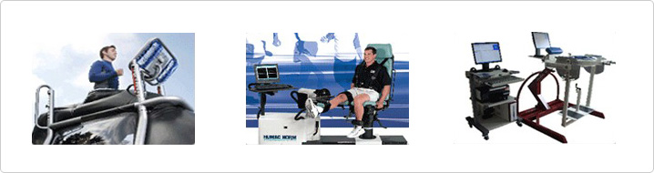

Our endoscopy surgery
A one day surgery process of simultaneouslydiagnosing and performing the operation
- A special clinical system and special wards wherein the patients are hospitalized, diagnosedand operated on keeps the stay within two days and a
single night.
- Early arthritis treatment at the joint preserving center helps protect the patient from degenerative arthritis metastasis
- Osteophyte, serosynovitis removal and osteotomy are simultaneously cured

The clinical medicine research center provides continuous research and development of surgical techniques
- Specialistprofessors directly perform the surgeries
- Involved in dissertations and research
Running a programwith the rehab centerto help patientsreturn to their normal daily activities
- Muscle strength recovery program measuresthe joint before and after surgery
- Fast return to normal daily activities by leveraging G-Trainer, which is Korea’s first weightless walking system
- Recover unstable joints via 3D Air balance